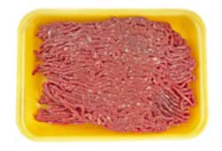

The third U.S. case of mad cow disease (bovine spongiformencephalopathy) was confirmed this week, 18 years after GreatBritain destroyed 3.7 million cattle in an effort to eradicate thefatal disease that had claimed 143 people in the UnitedKingdom.
Like the first two cases in the United States (December 2003,Washington state; November 2004, Texas), this time the degenerativedisease was found in a 'downed' animal. Downed animals cannot walkor stand, and are classified by the United States Department ofAgriculture (USDA) as 'diseased.' Estimates on the number ofdiseased/downed animals that make it into the human food supplyrange from 100,000 to 200,000 annually, or more than 70 percent ofthe downed animals brought to USDA slaughterhouses.
In addition to the risk of mad cow disease, downed cows are morelikely to be contaminated with fecal pathogens and other diseases.The USDA previously agreed to ban the use of downer cows, butrecently, USDA Secretary Mike Johanns announced that downed animalsmay again be used for human food. Because the USDA's policy ondowned animals has been inconsistent, concerned citizens ?including U.S. representative Gary Ackerman (D-NY), senator DanielAkaka (D-HI), and the organizationsFarm Sanctuary andNoDowners.org ? aresupporting legislation that would permanently ban the use of downedanimals in the human food supply. The U.S. Senate has passed theDowned Animal Protection Act, but the House has yet todecide.
|
 |
|
|